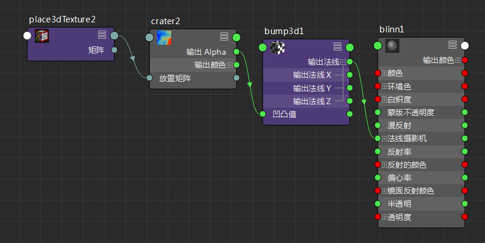
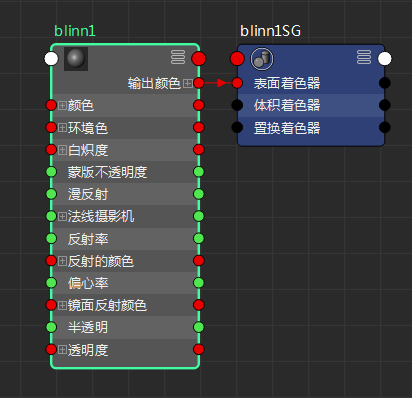
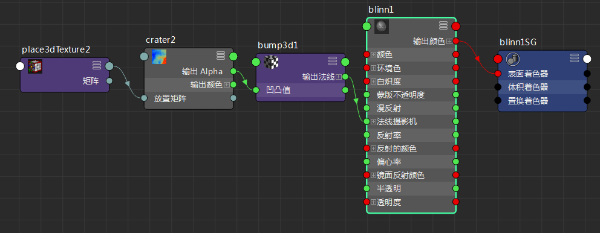

有关渲染节点和连接的详细信息，请参见关于着色网络。
显示连接
- 选择要查看连接的节点，然后在 Hypershade 工具栏中单击以下图标之一。（将光标悬停在一个图标上以显示其名称。） 注：
输入和输出连接有时称为上游/下游连接。
- 输入连接(Input Connections)
-
显示选定节点的输入连接或上游连接。此选项绘制网络直至选定节点的输入。
 - 输出连接(Output Connections)
-

显示选定节点的输出连接或下游连接。此选项从选定节点的输出绘制网络。
 - 输入和输出连接(Input and Output Connections)
-
显示选定节点的输入和输出连接。
